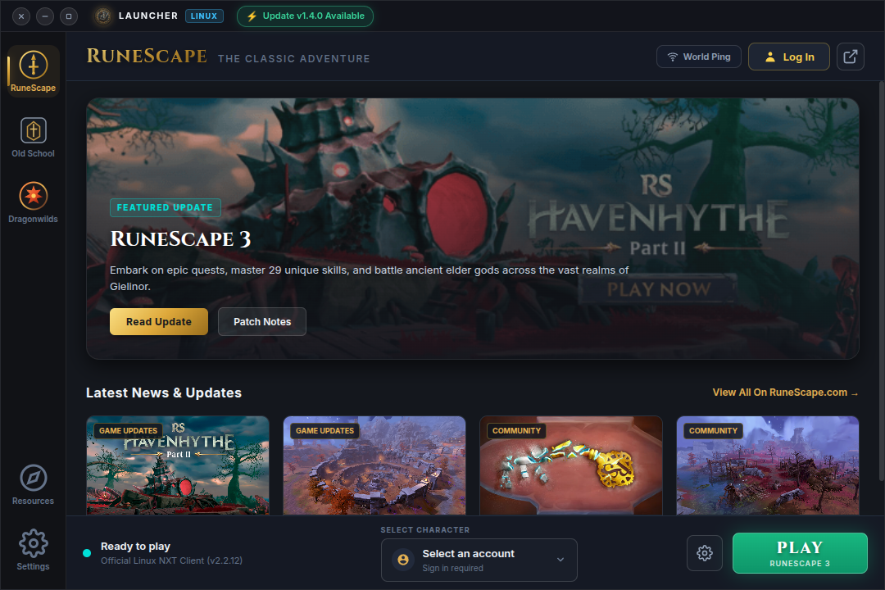

A 1:1 replica of the official Jagex Launcher crafted specifically for Linux and SteamOS. Experience native 64-bit NXT performance, Old School RuneScape with RuneLite & HDOS, and RuneScape: Dragonwilds — with direct Jagex Account OAuth 2.0 PKCE authentication.
sudo add-apt-repository ppa:danielcook2016/linux-jagex-launcher && sudo apt install -y linux-jagex-launcher
Designed from the ground up for seamless compatibility with official Jagex games and community clients.
Runs Jagex's official 64-bit native NXT client directly on your Linux kernel. No Wine prefixes, zero Proton latency, and maximum hardware acceleration.
sudo.
Enjoy full flexibility with your favorite clients. Seamlessly inject your Jagex Account session with a single click.
~/.runelite configurations, plugins, screenshots, and bank tags.
Launch Jagex's upcoming open-world survival action RPG seamlessly through Linux Steam integration.
steam://run/1374490 for instant play.
Official aesthetics with Linux power tools under the hood.
Faithful replica of the official launcher with live event artwork, official Jagex server maintenance notices, and native left-side window controls.
Integrated diagnostic tool in Settings that audits GPU drivers (OpenGL, Vulkan), display servers, and runtime packages with copyable fix commands.
Direct OAuth 2.0 PKCE authentication with account.jagex.com. Built-in interactive view handles Turnstile bot checks and 2FA with zero credential leaks.
Enable "Close on Launch" in settings to automatically terminate the launcher after your game starts, releasing 100% of memory for your games.
One-click toggles in Settings to engage Feral gamemoderun for CPU governor scheduling and mangohud for real-time FPS & frametime stats.
No telemetry, no tracking servers, and no analytics. Tokens and settings are stored strictly in local userspace (~/.config/linux-jagex-launcher/).
Choose your distribution below for fast, automated setup.
The official Launchpad PPA provides packages built natively in Canonical's cloud builders. System dependencies are resolved automatically, and updates are delivered seamlessly with sudo apt upgrade.
sudo add-apt-repository ppa:danielcook2016/linux-jagex-launchersudo apt update && sudo apt install -y linux-jagex-launcherlinux-jagex-launcherOne-line automated installer (fetches latest release and configures apt):
curl -sSL https://cook0001.github.io/Linux-Jagex-Launcher/install.sh | bashOr download the standalone package manually:
curl -LO https://github.com/cook0001/Linux-Jagex-Launcher/releases/latest/download/jagex-launcher_1.4.1_amd64.deb && sudo apt install ./jagex-launcher_1.4.1_amd64.deb
Installs cleanly into ~/Applications/ without requiring disabling SteamOS read-only mode. Automatically configures the Non-Steam shortcut, places official high-res Steam Grid artwork (poster, banner, hero), and maps controller navigation.
Steam → Power → Switch to Desktop).
curl -sSL https://cook0001.github.io/Linux-Jagex-Launcher/deck-install.sh | bash
Install using your favorite AUR helper or compile manually with makepkg:
yay -S linux-jagex-launcher-binparu -S linux-jagex-launcher-binRuns on virtually any modern 64-bit Linux distribution with FUSE support:
curl -LO https://github.com/cook0001/Linux-Jagex-Launcher/releases/latest/download/Jagex-Launcher-1.4.1.AppImagechmod +x Jagex-Launcher-1.4.1.AppImage && ./Jagex-Launcher-1.4.1.AppImageFor Fedora Workstation: ensure FUSE libraries are installed:
sudo dnf install -y fuse-libsBuild from Source with Node.js 22+:
git clone https://github.com/cook0001/Linux-Jagex-Launcher.git && cd Linux-Jagex-Launcher && npm install && npm run qcAnswers regarding game security, anti-cheat, account migration, and performance tuning.
No. This launcher does not modify game code, alter memory, intercept network packets, or inject unauthorized hooks into game clients. It utilizes official Jagex OAuth 2.0 PKCE authentication and passes standard session environment variables (JX_SESSION_ID, JX_CHARACTER_ID) directly to official, verified game binaries (RuneLite, HDOS, or native RuneScape 3).
Your plugins, tile markers, bank tags, and configurations remain 100% untouched. The launcher launches RuneLite within your standard user home directory, seamlessly preserving ~/.runelite while enabling web links in-game to open in your default Linux browser.
Yes! Migrated Jagex Accounts can no longer use legacy login screens. Linux Jagex Launcher executes the official OAuth 2.0 PKCE flow, handles Cloudflare Turnstile verification natively, and securely injects your active session into your selected game or client.
The launcher unpacks Jagex's official Debian package into your local user data directory (~/.local/share/linux-jagex-launcher/client/) using userspace archive utilities (tar / ar), allowing it to install and update without ever requesting sudo or root privileges.
This freeze is typically caused by Wayland compositor conflicts with legacy GTK2/SDL2 or PulseAudio underruns. Linux Jagex Launcher resolves this automatically by enforcing GDK_BACKEND=x11, SDL_VIDEODRIVER=x11, PULSE_LATENCY_MSEC=100, unsetting XMODIFIERS, and providing an optional Mesa Zink (OpenGL over Vulkan) override in Settings.
Modern Ubuntu releases dropped libssl1.1. The native RS3 NXT client was linked against libssl.so.1.1 and crashes on clean installations. Rather than risking your package manager with old third-party packages, Linux Jagex Launcher extracts isolated libssl.so.1.1 libraries into userspace and injects LD_LIBRARY_PATH only for the game process, keeping your system 100% clean.
Yes! Both Feral GameMode (gamemoderun) and MangoHud can be toggled on/off in the Launcher Settings modal for high-performance CPU governor scheduling and real-time performance overlays.
Whether you are running RuneScape 3 on Arch, Old School on Steam Deck, or testing Dragonwilds on Ubuntu — your feedback helps us prioritize features, fix quirks, and deliver the best native Linux gaming experience.